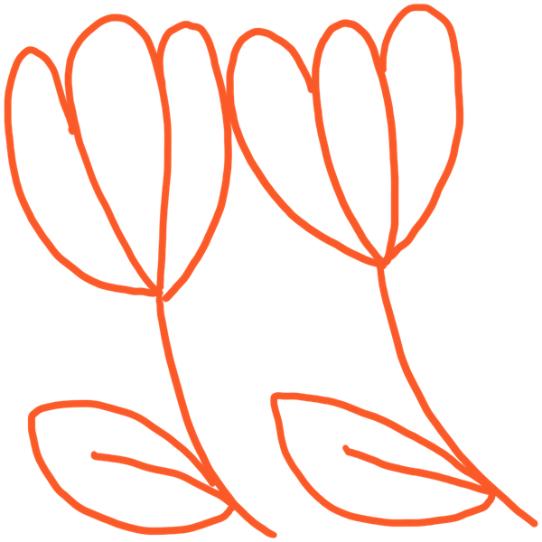

template: one card per project
2026 · solo · shipped
What it does, in a sentence. Then one more on the part that was hard, or the number that shows it worked.
live demo · source
2025 · team of 4 · hackathon
source
2025 · solo · in progress